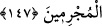
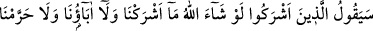
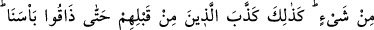

almaları ve haksız yere insanların mallarını yemeleri “yüzünden onları” yahudileri
“böyle cezalandırdık. Öyle ki, onlar ne vakit bir günah işleseler hemen ardından
kendilerine helal olan bir şey, haram kılınırdı. Onlar bu hükmü inkâr ederler ve
kendilerine haram kılınan şeylerin önceki ümmetler için de haram olduğunu
savunurlardı. Allah, onların bu iddialarını reddediyor ve bu hükmü şöylece tekid
ediyor: “Biz elbette” bütün söylediklerimizde, özellikle yalnız yahudilere haram
kılındığını bildirdiğimiz şeylerde ve onların taşkınlık ettiğini haber verdiğimizde
“doğru söyleyeniz.”
147. Eğer seni yalanlarlarsa de ki: Rabbiniz geniş bir rahmet sahibidir. Bununla
beraber O’nun azabı, suçlular topluluğundan uzaklaştırılamaz.
“Eğer” kendilerine açıklanan haramlar ve helâller hususunda yahudiler ve müşrikler
“seni yalanladılarsa de ki: “Rabb’iniz bol rahmet sahibidir.” Bu yalanlamalarınızdan
ötürü sizi cezalandırmakta acele etmez. Ancak buna aldanmayın. Çünkü bu bir ihmal
değil, imhâl; yani mühlet vermedir. “Fakat O’nun azabı da” gelip çattığı zaman “suçlu
toplumdan geri çevrilemez.”
148. Putperestler diyecekler ki: “Allah dileseydi ne biz ortak koşardık ne de
atalarımız. Hiçbir şeyi de haram kılmazdık.” Onlardan öncekiler de aynı şekilde
(peygamberleri) yalanladılar ve sonunda azabımızı tattılar. De ki: Yanınızda bize
açıklayacağınız bir bilgi var mı? Siz zandan başka bir şeye uymuyorsunuz ve siz
sadece yalan söylüyorsunuz.
Allah’a “ortak koşanlar diyecekler ki: “Allah” ortak koşmamamızı “isteseydi biz de
babalarımız da O’na ortak koşmazdık, bir şeyi de haram kılmazdık.” Bununla
yaptıkları işin hak ve Allah’ın rızasına uygun olduğunu söylemek istemişlerdir.
“Onlardan öncekiler de” peygamberleri “böyle” bir yalanlamayla, yani “Biz ancak
Allah tarafından meşru kılındığından ve hoşnud olunduğundan ortak koştuk ve bu şeyleri